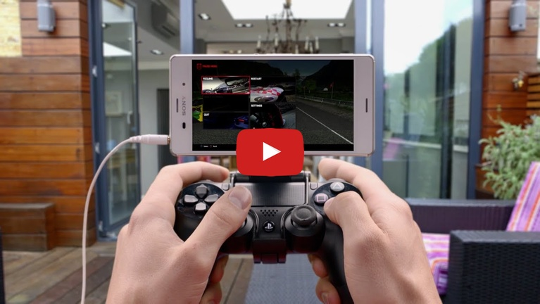

Bienvenido a Red5Tube
|  |
|
PS4 Remote Play |
|
PS4 Remote Play es una herramienta con la que podrás transmitir en directo lo que sucede en tu Play Station directamente en tu terminal Android o a cualquier otra pantalla de tu casa de la manera más fácil. Con esta utilidad podrás disfrutar de tus juegos favoritos de la Play Station 4 a través de un dispositivo inalámbrico DUALSHOCK y tu cuenta de Sony. |
|
159 visualizaciones |